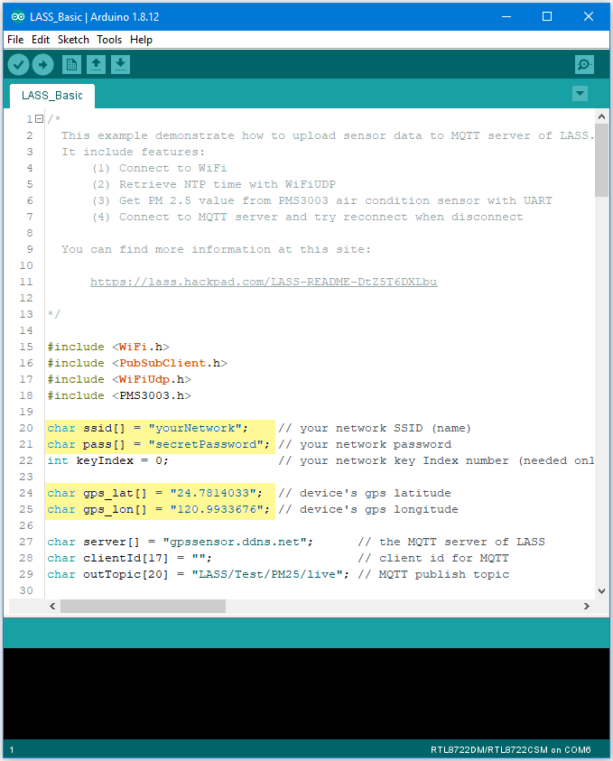
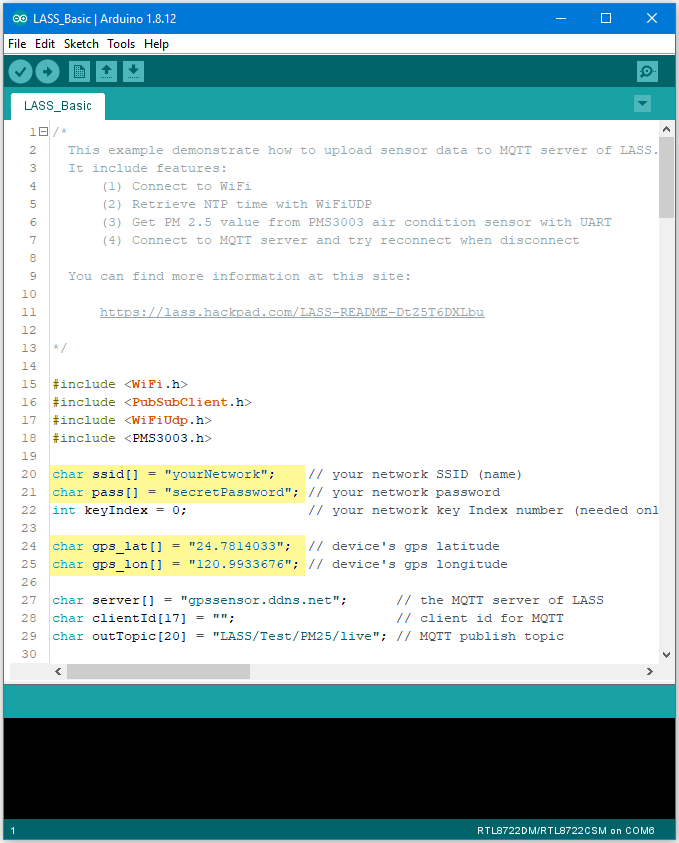

[RTL8722CSM] [RTL8722DM] Upload PM2¶
Intro to LASS
The LASS stands for “Location Aware Sensor System”. It is an open project and was started only for the interest of public welfare. Find detailed introduction here.
Practically, LASS is based on MQTT protocol to collect all kinds of uploaded data, and for those who need these data can subscribe top as well. Find more LASS information at their official hackpad.
Preparation
Ameba x 1
PlanTower PMS3003 (or PMS5003) x 1
Example
In this example, we use applications mentioned at our website, including:
- MQTT:
a MQTT-Broker to connect to LASS. The Client is “FT1_0XXXX”, the XXXX are the four last digits of Ameba’s Wi-Fi MAC, and the outTopic is “LASS/Test/Pm25Ameba/clientID“, where clientID is the actual Ameba’s MQTT client ID.
- NTP: uploaded
data must have time notation
- PM2.5: uploaded
data includes PM2.5 information
Open the example. “File” -> “Examples” -> “AmebaMQTTClient” ->
“lass_basic” This example requires internet connection, so make
sure you fill in SSID and PASS into AP information that you wish to
connect. Also, LASS requires GPS information. There is no GPS sensor
included in this example, so you must manually provide GPS information.
Use Google Map to find the coordinates you plan to place your Ameba. You
can see in this example that the latitude is 24.7814033, and the
longitude is 120.9933676
This example requires internet connection, so make
sure you fill in SSID and PASS into AP information that you wish to
connect. Also, LASS requires GPS information. There is no GPS sensor
included in this example, so you must manually provide GPS information.
Use Google Map to find the coordinates you plan to place your Ameba. You
can see in this example that the latitude is 24.7814033, and the
longitude is 120.9933676 Fill in GPS info at gps_lat and
gps_lon.Then connect sensors according to UART-PlanTower
PMS3003 wiring example. RTL8722 wiring diagram:
Fill in GPS info at gps_lat and
gps_lon.Then connect sensors according to UART-PlanTower
PMS3003 wiring example. RTL8722 wiring diagram: Compile the code
and upload it to Ameba. After pressing the Reset button, Ameba will
attempt to read PM2.5 data every minute and upload it to LASS
MQTT-Broker. Open Serial Monitor to see the uploaded data, including
client id, topic, and current PM2.5 status.
Compile the code
and upload it to Ameba. After pressing the Reset button, Ameba will
attempt to read PM2.5 data every minute and upload it to LASS
MQTT-Broker. Open Serial Monitor to see the uploaded data, including
client id, topic, and current PM2.5 status. We can also use
MQTTlens to verify if the data is properly uploaded. Enter
“gpssensor.ddns.net” as the MQTT-Broker server and “LASS/Test/PM25/live”
as the subscribe topic to receive data. The time uses UTC format, and
the PM2.5 data stores in s-d0. In the figure, s_d0 = 9 represents that
the PM2.5 is 9, meaning that the entire publish/ subscribe process is
working successfully.
We can also use
MQTTlens to verify if the data is properly uploaded. Enter
“gpssensor.ddns.net” as the MQTT-Broker server and “LASS/Test/PM25/live”
as the subscribe topic to receive data. The time uses UTC format, and
the PM2.5 data stores in s-d0. In the figure, s_d0 = 9 represents that
the PM2.5 is 9, meaning that the entire publish/ subscribe process is
working successfully.
{kind=link}